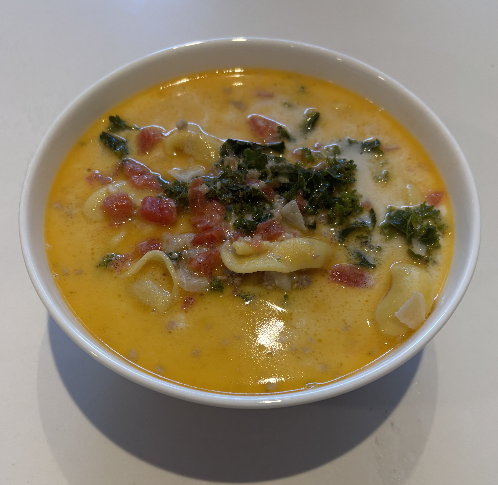

Home
Creamy Tortellini and Sausage Soup

Ingredients
- 8oz mild ground italian sausage
- 1 fresh yellow onion chopped
- 3 cloves fresh garlic chopped
- 1 tsp italian seasoning
- 1 bunch fresh kale chopped
- 1/4 cup all purpose flour
- 2 lbs chicken broth
- 2 cans petite tomatoes (14oz each)
- 16 fl oz heavy cream
- 19 oz frozen cheese tortellini
- 1/4 cup extra virgin olive oil
- Salt and pepper to taste
Steps
- In a large dutch oven over medium heat, add the olive oil, italian sausage, chopped onions, chopped garlic, and italian seasoning. Break up the Italian sausage as it cooks, and continue to cook the mixture, stirring often, for about 5-7 min.
- Add the chopped kale to the pot and cook for another 5 min, stirring often.
- Add the flour and cook for another 3-5 min, coating the ingredients and stirring often.
- Then add the chicken broth, tomatoes, and 4 cups of water. Cook for another 10 min, stirring occasionally.
- Add the heavy cream and frozen cheese tortellini to the pot. Reduce the ehat to a simmer and cook, stirring occasionally, for 20-30 min. Season to taste with salt and pepper.